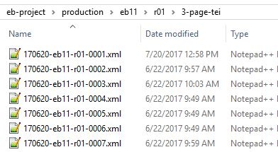

3-page-tei Folder Container for TEI Page Files, before conversion into entries. The HTML files are transformed into TEI using an XSLT script. These are still page files, with the same base name as the HTML files but with an .xml file extension.Figure: 3-page-tei folder 